4-1 光的傳播與光速講義 p.3–7 · 30 題
① 重點填空 先自己想，再點空格看答案
- 光在真空或均勻介質中會以的方式傳播，因此稱為「光線」。p.3
- 光線遇到不透明的障礙物，不能繼續前進，會在物體後方形成。p.3
- 當光源愈靠近物體，或牆壁遠離物體時，物體所形成的影子愈。p.3
- 針孔成像利用光的原理；成像性質是上下、左右的實像。p.4
- 像的大小比值：像高 ÷ 物高 ＝ ÷ 。p.4
- 將針孔挖大，紙屏上的像因為射入的光較多而變，形狀則因彼此重疊而變。p.4
- 光在真空中的傳播速率約為 公尺／秒（講義印成「3X108」，正確寫法是 3×10 的 8 次方），通常以 c 表示。p.7
- 光速大小排列： ＞ 空氣 ＞ ＞ 玻璃。p.7
- 光從太陽傳播到地球大約只需 秒。p.7
② 逐題練習
下列哪些現象可以說明光是直線傳播的？
（甲）小燈泡、兩張西卡紙的圓孔和眼睛排成一排，就可看見小燈泡的光
（乙）日晷可用來判斷時間
（丙）將塑膠管拉直可看到另一端的光，但彎曲則不能
（丁）植物行光合作用因而成長，萬物才得以生存繁衍
甲：要排成一直線才看得到，就是光走直線 ✓。乙：日晷靠影子，影子來自光走直線 ✓。丙：管子一彎光就過不來 ✓。
丁講的是光提供能量，和光怎麼走無關 ✗。
光通常以何種方式傳播？
在均勻介質中，光走直線。
下列關於「光」的敘述，何者正確？
竹竿擋住直線前進的光，後面才有影子。
(A)(D) 玻璃是固體、水是液體，光都能通過。(C) 均勻介質中只走直線。
關於光在真空、空氣與水中傳播速率的比較，下列何者正確？
光是電磁波，不需要介質，在真空中最快。介質愈「擋路」愈慢：真空＞空氣＞水＞玻璃。
小心和聲音相反：聲音在真空傳不了，在固體最快。
在地面上直立一長竹竿，則同一天內竹竿的影子在何時最長？
太陽愈低，影子愈長。四個時間裡，下午 5 時最接近日落，太陽最低。
如右圖，有甲、乙、丙三支等高的竹竿，在陽光下所產生的影長大小關係為何？
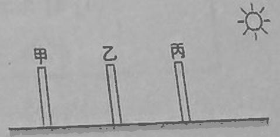
太陽非常遠，照到地面的光線可以看成互相平行。三支竹竿等高、光線方向相同，影子就一樣長。
小明站在一座高度 12 公尺的鐵塔旁，發現在陽光下鐵塔的影長為 4 公尺，而小明的影長卻只有 0.5 公尺，請問小明有多高？
同一時間，高度 ÷ 影長都相同。鐵塔：12 ÷ 4 ＝ 3。
小明身高 ＝ 0.5 × 3 ＝ 1.5 公尺 ＝ 150 公分。
某次月食，從開始（初虧）到結束（復原）共經歷了 25 分鐘，試問若光速變得跟聲速一樣慢，則下列敘述何者正確？
光變慢，影像要花更久才傳到地球，所以我們會晚一點才看到月食開始。
但開始和結束都晚了同樣的時間，兩者相差仍是 25 分鐘。
燭火不動，將手移近燭火，影子大小變化如何？
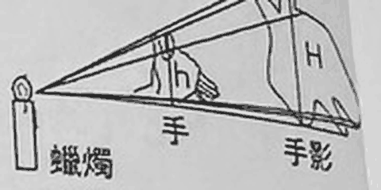
手愈靠近光源，擋住的光線張角愈大，牆上的影子就愈大。
小東將手與牆壁間的距離固定不變，而將蠟燭改換一較亮的小燈泡，仍放在蠟燭原來的位置上，則此時牆上的影子大小變化如何？
影子大小只看光源、手、牆壁的相對位置。燈變亮只會讓亮暗對比更明顯，大小不變。
小東的手會在牆壁上產生影子，這是因為光有哪一種性質造成的？
光走直線，繞不過手，手的後面就暗了。
小華中午躺在校園中一棵枝葉茂密的榕樹下，發現樹蔭裡有許多亮亮的小圓點，這是光的何種性質？
葉子間的小縫就像針孔，小圓點是太陽的針孔成像（太陽是圓的，所以亮點也是圓的）。針孔成像靠光走直線。
有一點光源距不透明物體 1 m 遠，不透明物體在屏上的影子面積是 10 cm²，若讓屏向後移動一段距離後，發現影子變為 40 cm²，試問屏移動了多少公尺？
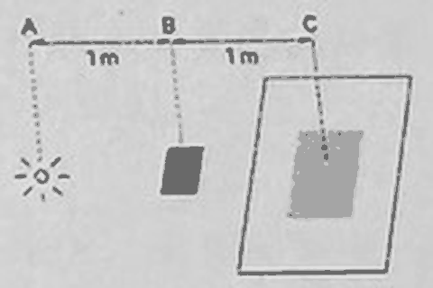
面積變 4 倍，長和寬各變 2 倍，所以屏到光源的距離也要變 2 倍。
原本光源到屏是 1＋1＝2 m，要變成 4 m，屏移動了 4－2＝2 m。
右圖為針孔成像裝置圖，已知燭火與針孔相距 10 公分，針孔與紙屏相距 15 公分，若燭火高度為 5 公分，則紙屏上的燭火像高度為多少公分？
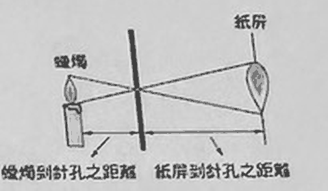
像高 ÷ 物高 ＝ 屏距 ÷ 物距 ＝ 15 ÷ 10 ＝ 1.5。
像高 ＝ 5 × 1.5 ＝ 7.5 公分。
承上題，紙屏上的燭火像之屬性為何？應如何判別？
判斷實像或虛像的依據是：能不能呈現在紙屏上。上下左右相反只是描述樣子，不是判別方法，所以選 (B) 不選 (A)。
若圖一中蠟燭燭焰高 2 公分，而紙屏上的燭焰成像高為 3 公分，已知蠟燭到針孔間相距 4 公分，則紙屏到針孔間的距離應為＿＿公分。
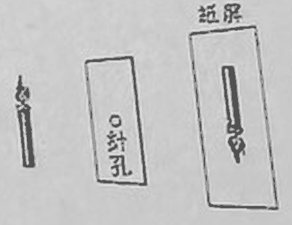
像高 ÷ 物高 ＝ 3 ÷ 2 ＝ 1.5，屏距也是物距的 1.5 倍。
屏距 ＝ 4 × 1.5 ＝ 6 公分。
紙屏上的成像圖案最接近下列何者？
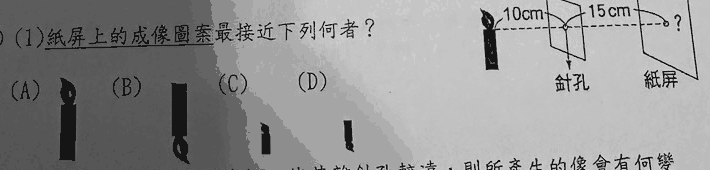
針孔成像會上下顛倒，先刪掉火焰朝上的圖。
屏距 15 cm 比物距 10 cm 大，像會放大 1.5 倍，所以選又大又倒立的 (B)。
小雷如果把紙屏往後拉，使其離針孔較遠，則所產生的像會有何變化？
屏距變大，像高 ÷ 物高的比值變大，像就變大（但變暗）。針孔成像不用對焦，不會因此模糊。
如果在中間的紙板上再刺兩個一樣大的針孔，其他維持不變，則燭火在紙屏上的成像變化，下列何者正確？
每個針孔各自成一個像，三個孔就有三個像。距離沒變，所以每個像的大小都和原來相同。
如果針孔成像裝置的針孔開得太大時，則在紙屏上的成像會發生什麼變化？
孔太大，很多個像疊在一起，看不出燭火的形狀，只剩一片亮區。
若一開始，老師用針在紙片上輕戳一個小孔，當燭火光線經過紙片針孔時，卻無法在紙屏上形成燭火影像，其可能原因應為何？
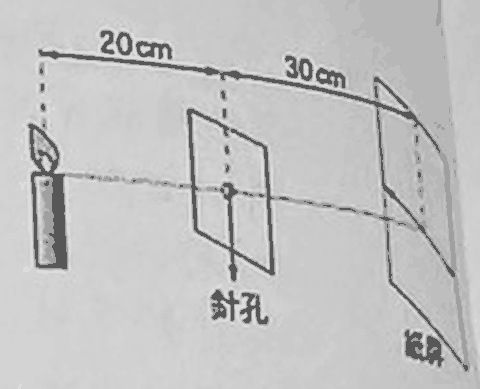
題目特別說「輕戳一個小孔」，孔太小時，通過的光太少，像暗到看不見。
(B) 像的形狀和孔的形狀無關（孔夠小時）。(D) 距離近只是像變小，仍然成像。
若紙屏呈現清晰影像時，火焰高 10 cm，試問紙屏上的影像大小為何？ 選項：(A) 4 cm (B) 14 cm (C) 25 cm (D) 35 cm
像高 ÷ 物高 ＝ 屏距 ÷ 物距 ＝ 30 ÷ 20 ＝ 1.5。像高 ＝ 10 × 1.5 ＝ 15 cm。
若紙屏呈現清晰影像時，老師將蠟燭向後移，針孔及紙屏的位置固定不變時，燭火的像如何變化？
把「向後」當成沿著光前進的方向（圖上由左往右）：蠟燭靠近針孔，物距變小，比值 屏距 ÷ 物距 變大，像變大。
若紙屏呈現清晰影像時，老師將針孔向後移，蠟燭及紙屏的位置固定不變時，燭火的像如何變化？
針孔往紙屏靠近：物距變大、屏距變小，比值 屏距 ÷ 物距 變小，像變小。
若紙屏呈現清晰影像時，老師將紙屏向後移，蠟燭及針孔的位置固定不變時，燭火的像如何變化？
紙屏遠離針孔，屏距變大，像變大。
若取一細針在燭火與針孔間，由右向左移動，則紙屏上細針的影子移動方向為何？
光線穿過針孔會交叉，物體這邊往左，紙屏那邊就往右。
在空氣中，關於光速與聲速的比較，下列何者正確？
光速約 3×108 公尺／秒，聲速約 340 公尺／秒，差了將近一百萬倍。所以打雷時先看到閃電。
下列關於光的敘述，何者正確？
(A) 單位錯，應是 3×108 公尺／秒。(B) 光年是距離單位。(C) 換介質，光速就會變。
如果看見閃電之後，經過 5 秒鐘才聽見雷聲，請估計發生閃電處距離觀測的地點之距離大約多少公尺？（假設當時聲速為 340 公尺／秒）
光幾乎瞬間到達，時間差就是聲音走的時間。距離 ＝ 340 × 5 ＝ 1700 公尺。
假設月球至地球的距離為 4×108 公尺，則如果在月球上（面對地球的一面）發生大爆炸，則地球上的人約在多少秒後可以看見大爆炸的情形？
時間 ＝ 距離 ÷ 光速 ＝ 4×108 ÷ 3×108 ≈ 1.33 秒。
4-2 光的反射與面鏡講義 p.8–12 · 28 題
① 重點填空 先自己想，再點空格看答案
- ：入射光前進的方向及路徑；：反射光前進的方向及路徑。p.8
- ：垂直於界面的直線。p.8
- ：入射線與法線的夾角；：反射線與法線的夾角。p.8
- 光在任何表面發生反射時，均會遵守；反射角入射角。p.8
- 入射線、反射線與法線均在，且入射線與反射線分別在法線的兩側。p.8
- 平行光入射到光滑平面，反射光線也互相平行，稱為；入射到粗糙表面，反射光無固定方向，稱為。p.8
- 平面鏡成像：立、大的像；像與物體左右；物距像距。p.10
- 人要從鏡子中看見自己全身，鏡長需為身長的。p.10
- 指針式時鐘：鏡內時間＋實際時間＝小時。p.10
- 凹面鏡能夠光線；凸面鏡能夠光線。p.10
- 哈哈鏡是由和一起組成的。p.10
② 逐題練習
白天室內沒有光源仍可看見物體的存在，這是因為物體表面對於室外投射過來的光線發生什麼現象所造成？
物體把外面照進來的光反射進我們的眼睛，我們才看得見它。
有關反射定律的敘述，下列何者錯誤？
沿著法線入射時，入射角是 0 度，反射角也是 0 度：光線原路彈回，仍然有反射。
小雷如果想在黑暗的房間中，從平面鏡中看到自己的臉，請問他應該將手電筒的光照向哪裡成像會最清楚？
要看到臉，臉要有光反射到鏡子。把光照在臉上，臉才夠亮。
若一束光線與平面鏡鏡面夾角成 30 度，射向平面鏡後發生反射，則反射光線與入射光線的夾角為＿＿。
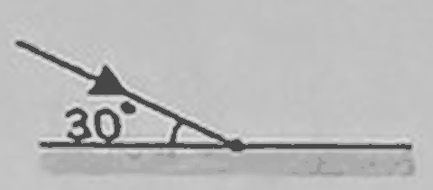
入射角要從法線量：90－30＝60 度。反射角也是 60 度，夾角 ＝ 60＋60＝120 度。
承上題，若此平面鏡朝逆時鐘方向旋轉 15°，使光線與平面鏡夾角變成 45 度，則反射光線與入射光線的夾角為＿＿。
入射角 ＝ 90－45＝45 度，夾角 ＝ 45＋45＝90 度。
如右圖，MM′ 為平面鏡，有一束光線由 A 點射向鏡上 O 點，試問入射角與反射角分別為何？
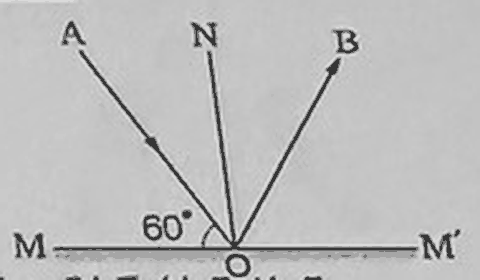
60° 是光線和鏡面的夾角。入射角從法線量：90－60＝30 度，反射角也等於 30 度。
承上題，若將 MM′ 順時針旋轉 20°，但 AO 的入射方向不變，則反射角的角度將會如何改變？
鏡子順時針轉，法線也順時針轉（往右偏 20°），離左邊的入射光更遠。入射角變成 30＋20＝50 度，反射角跟著變大。
如右圖為光線反射的情形，若將平面鏡逆時針旋轉 10 度後，入射光與反射光的夾角為何？
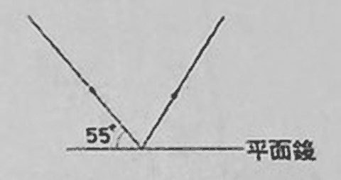
原入射角 ＝ 90－55＝35 度。鏡子逆時針轉 10 度，法線往左偏，靠近左邊的入射光：入射角變 35－10＝25 度。
夾角 ＝ 25＋25＝50 度。
如右圖所示，一束平行光照射到一個不平坦面上時，反射的光線雜亂無序，此現象稱為「漫射」，試問下列漫射的敘述何者正確？甲. 漫射的光線遵守光的直進性；乙. 漫射的光線不遵守光的直進性；丙. 漫射的光線遵守反射定律；丁. 漫射的光線不遵守反射定律。
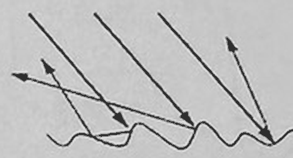
每一條光線都走直線，碰到各自的小斜面時也都遵守反射定律。只是每個地方的法線方向不同，所以反射光才散開。
先將鋁箔弄皺後再攤開，則當光在凹凸不平的鋁箔面上反射時，其入射角和反射角的關係為何？
和上一題相同：凹凸面上的每個小點仍遵守反射定律。
當眼睛往平面鏡中央看時，可完整看到哪一張紙卡？
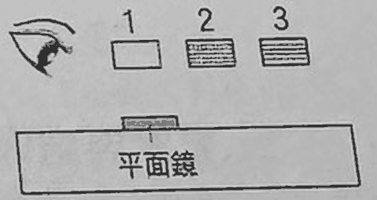
眼睛和紙卡都在鏡子同一邊，反射點的法線要把「眼睛」和「紙卡」的夾角平分。鏡子中央大約在 1 號卡下方，眼睛在左邊，對稱過去就是 2 號卡。
若想在鏡中完整看到 1 號卡，則可將平面鏡往哪一方向移動？
反射點要落在眼睛和 1 號卡的正中間，這個位置在目前鏡子中央的左邊，所以鏡子要往左移。
關於平面鏡的成像性質，下列敘述何者錯誤？
平面鏡成的是虛像，不是實際光線聚成的，紙屏接不到。
下列哪一個物體在鏡中的成像是錯誤的？
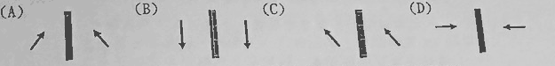
正確的像要和物體以鏡面左右對稱。(C) 的箭頭兩邊都朝左上，沒有對稱。
下列各圖中，何者為一把梳子及其在平面鏡中正確的成像？
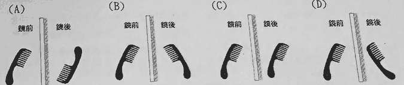
鏡前的梳子：握把在左下、頭在右上、齒朝右下。對稱過去就是：握把在右下、頭在左上、齒朝左下，是 (B)。
將一張寫有「b d」的字卡豎立在平面鏡前，則眼睛在平面鏡前觀看「b d」在鏡中的成像應為何？
左右對調有兩件事：順序對調，每個字也翻面。
先對調順序成 d、b，再翻面：d→b、b→d，結果還是 b d。
在白紙上自左而右寫英文字母 pqbd，放在平面鏡旁，則鏡中的像自左而右為何？
順序對調：d、b、q、p。每個字翻面：d→b、b→d、q→p、p→q。結果 bdpq。
如果有一個沒有數字的指針時鐘，在平面鏡中的時間是 2 時 40 分，請問時鐘正確的時間是多少？
鏡內時間＋實際時間＝12 小時。12:00－2:40＝9 時 20 分。
一平面鏡右側放置一個僅有刻度但無數字標示的指針式時鐘，其相對位置如右圖，平面鏡內時鐘的成像時間為 4 時 23 分，則此時之正確時間應為何？
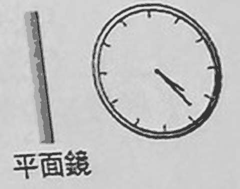
12:00－4:23＝7 時 37 分。
西施用鏡子照自己的臉，發現因鏡子太小，沒辦法一次照到全部的臉，因此西施把鏡子拿遠離自己的臉，試回答他所看到的影像會如何變化？
鏡子拿遠時，眼睛到像的距離也變遠，兩者同比例變化。能看到的範圍永遠是鏡子大小的 2 倍，不會變。
曉秋在平面鏡中看到自己的影像，如果他遠離平面鏡後退 1 公尺，則他與鏡中影像之間的距離將會有何種變化？
人退 1 公尺，像也往鏡後退 1 公尺，兩者距離增加 2 公尺。
小民站在一平面鏡前 4 公尺處，可看到自己鏡中的成像；若他往平面鏡靠近了 1.5 公尺，則他與鏡中成像的距離應為多少？
靠近後距離鏡子 4－1.5＝2.5 公尺，人和像的距離是兩倍：5 公尺。
君君原本站在平面鏡前 5 公尺處，向前移動一段距離後，發現自己與鏡中成像的距離變為 6 公尺，請問君君向前移動了幾公尺？
人和像相距 6 公尺，代表人距離鏡子 3 公尺。移動了 5－3＝2 公尺。
如右圖所示，東寧的前、後、左、右共有四面鏡子，若東寧向右移動，則此四面鏡子中，有幾面鏡內東寧的像是向右移動？
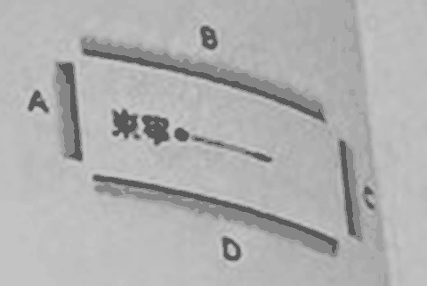
上下兩面（B、D）和移動方向平行，像跟著向右。
左右兩面（A、C）和移動方向垂直：人靠近右鏡，像也朝鏡面靠近，等於向左；左鏡同理也向左。所以只有 2 面。
如右圖所示，壁畫中間有一小孔，上下隔板間有一個 24 cm 寬的間距，隔板後有一平面鏡。蕭佩若要由壁畫小孔透過平面鏡觀察壁畫，試問最多可觀察多寬的壁畫？
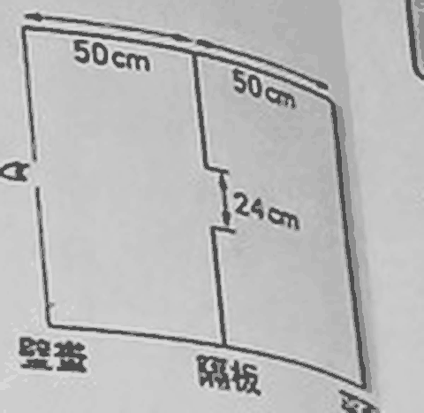
把鏡子後面「攤平」來看：從眼睛出發，隔板在 50 cm，鏡子在 100 cm，隔板的像在 150 cm，壁畫的像在 200 cm。
光線去程穿過 50 cm 的間距，回程還要穿過 150 cm 的間距（也是上下各 12 cm）。限制最嚴的是 150 cm 這一關。
到 200 cm 時，單邊寬度 ＝ 12 × 200 ÷ 150 ＝ 16 cm，上下合計 32 cm。
最容易選錯 (D) 96 cm：那是只算去程、忘記光從壁畫到鏡子也要穿過隔板。
芬蘭手拿著一面 40 公分寬的平面鏡，鏡面放在自己眼前 10 公分處，如果芬蘭想要從鏡子內看到背後 2.8 公尺寬的白板，則芬蘭至少要距白板多少公分才能看到整個白板？
設人到白板 x 公分。白板到鏡子 x＋10，鏡中的白板離眼睛 ＝ 10＋(x＋10) ＝ x＋20。
相似三角形：40 ÷ 10 ＝ 280 ÷ (x＋20)，得 x＋20＝70，x＝50 公分。
有一平面鏡與地面夾角 45 度，若將一小球放於鏡前，如右圖所示，試問小球在鏡中的成像位置應是下列何者？
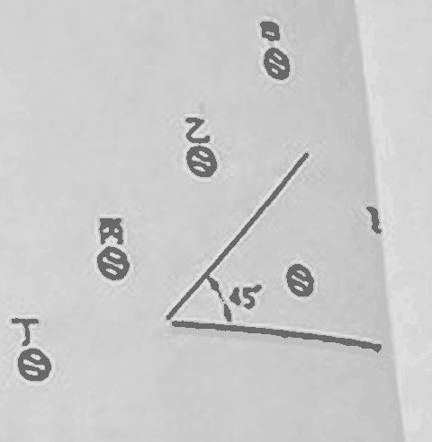
像和物體對鏡面對稱：從小球畫一條垂直鏡面的線穿過去，鏡後等距離的位置就是像，落在乙。
阿滴站在與地面夾角 45 度的平面鏡前，如右圖所示，試問阿滴由鏡中所見自己的影像應為下列何者？
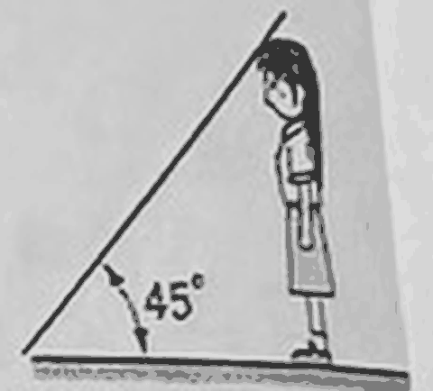
人和鏡面夾 45 度，對稱過去的像和鏡面也夾 45 度，人和像之間就是 90 度。人是直立的，像就躺平，和地面平行。
4-3 光的折射與透鏡講義 p.13–20 · 35 題
① 重點填空 先自己想，再點空格看答案
- 光由一均勻介質進入另一均勻介質，由於在不同介質中行進速率，行進方向會產生偏折的現象稱為。p.13
- 當光從空氣中進入水中，在交界面上通常會同時發生與。p.13
- 光進入水之後的行進路徑稱為，折射光與法線的夾角稱為。p.13
- 光發生折射時，僅光速與波長發生改變，但不變。p.13
- 入射線、折射線與法線均在，且入射線與折射線分別在法線的兩側。p.13
- 光從光速快的介質進入光速慢的介質：折射線法線，入射角折射角。p.13
- 光從光速慢的介質進入光速快的介質：折射線法線，入射角折射角。p.13
- 三稜鏡各面均為平面，光由空氣中射入任一面時會發生折射，射出稜鏡時會再發生一次。p.16
- 凸透鏡：中央、周圍，能光線；凹透鏡：中央、周圍，能光線。p.16
- 凸透鏡，物體在 2f 外：像在 f～2f 之間，。p.17
- 凸透鏡，物體在 2f 上：像在 2f 上，。p.17
- 凸透鏡，物體在 f～2f 內：像在 2f 外，。p.17
- 凸透鏡，物體在焦點上：；物體在焦點內：。p.17
- 凹透鏡不論物體放在鏡前何處，都成。p.19
② 逐題練習
關於光的折射現象，下列敘述何者錯誤？
光速變慢，折射線應該偏向法線。可以記成：慢下來，就往法線靠。
以下是日常生活中常會看到的一些現象，請問哪些和光的折射相關？
甲. 藉由放大鏡輔助閱讀；乙. 皮影戲；丙. 筷子插入加水的玻璃杯中，看起來像是折斷一樣；丁. 視角不變，在碗中加水使原本看不見的碗底硬幣可整個被看見；戊. 在山路轉彎處架設凸面鏡。
甲（透鏡）、丙、丁都是折射。乙皮影戲是光的直進（影子）；戊凸面鏡是反射。
將筷子插入盛水的燒杯中，從水面上看，筷子像斷成了兩截，這現象是光的哪個性質所造成？
水中筷子的光進入空氣時發生折射，看起來位置改變。
如右圖所示，AO 為光的入射線，下列敘述何者錯誤？
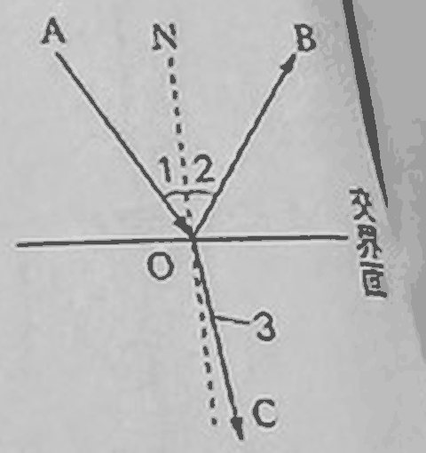
圖中折射線 OC 比入射線更靠近法線，代表光變慢了，是從快的介質射向慢的介質。
(D) 是光的可逆性，正確。
右圖為一折射實驗，若入射光線 I 由空氣進入水中，則可能的折射光線應為何？
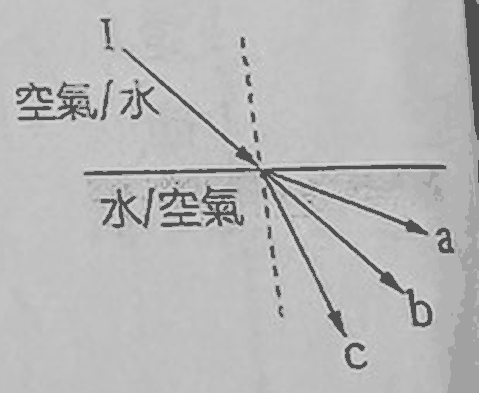
空氣進水，光變慢，折射線偏向法線。b 是直線沒有偏折，最靠近法線的是 c。
承上題，若入射光線 I 由水進入空氣中，則可能的折射光線應為何？
水進空氣，光變快，折射線偏離法線，選離法線最遠的 a。
小娟將一根筷子插入水中，當他從上方觀察時，所看到的情形最可能是下列何者？
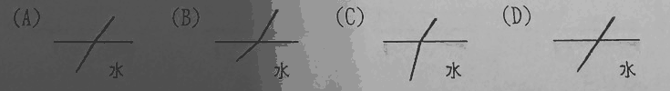
水中的物體看起來比實際淺，水中的筷子像是往水面翹起，比水面上那一段更平，就是 (B)。
當我們注視沉在許願池中的硬幣時，視覺上感覺的距離和實際深度有何差異？
從空氣看水中物體，看起來變淺、變近。
珍珍到海中進行浮潛活動時，仰頭看見海面上有一隻海鳥飛過。請問海鳥實際的位置與珍珍從水中所看到的海鳥位置相較為何？
從水中看空氣中的東西，會覺得變遠、變高。所以海鳥實際位置比看到的低。
光由空氣射入水中的相關現象，下列敘述何者錯誤？
折射時光速和波長改變，頻率不變。
如下圖所示，光以相同的入射角從水中射出到四種不同的介質中，試問光在哪一種介質中的傳播速率最快？
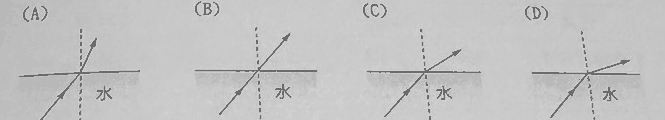
光速愈快，折射線偏離法線愈多，折射角愈大。(D) 最偏離法線。
如右圖，光線經過甲、乙、丙三層介質時發生折射，且 γ＞α＞β，則光線在三介質中的速率快慢比較為何？
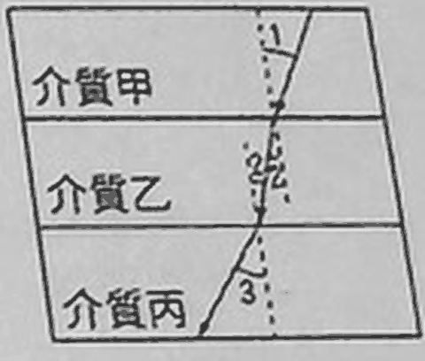
光線和法線的夾角愈大，光速愈快。假設 α、β、γ 依序在甲、乙、丙，γ 最大、β 最小，所以 丙＞甲＞乙。
如右圖，光線經過甲、乙、丙三層介質時發生折射，且 ∠3＞∠1＞∠2，則光線在三介質中的速率快慢為何？
∠1、∠2、∠3 分別在甲、乙、丙，角度愈大光速愈快：丙＞甲＞乙。
有一光線由介質 A 射向介質 B，已知入射角為 50°，折射角為 30°，則其反射線與折射線的夾角為何？
反射角也是 50°。反射線和折射線的夾角 ＝ 180°－50°－30°＝100°（一條法線的上下兩段是 180°）。
子瑜用雷射筆，將光線以 45 度的入射角由水中射入不同介質中，然後測量折射角，其所得的數據如下表所示，則下列何種介質最可能是空氣？
| 介質 | 甲 | 乙 | 丙 | 丁 |
|---|---|---|---|---|
| 入射角 | 45° | 45° | 45° | 45° |
| 折射角 | 25° | 45° | 35° | 60° |
水進空氣，光變快，折射角要大於入射角。只有丁（60°）符合。
已知 θ₁＞θ₃，試問光在哪一個介質中的傳播速率較快？
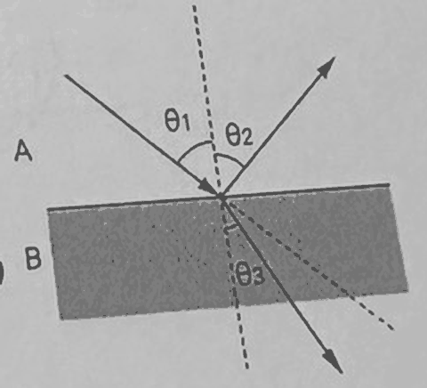
角度大的那一邊光速快。θ₁ 在 A，所以 A 較快。
試問 θ₁ 及 θ₂（反射角）的大小比較為何？
反射定律：入射角等於反射角。
上題，試問 θ₂ 及 θ₃ 的大小比較何者正確？
θ₂＝θ₁，而 θ₁＞θ₃，所以 θ₂＞θ₃。
下列哪一種透鏡屬於凹透鏡？
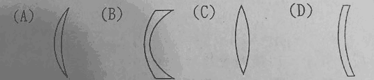
凹透鏡中央薄、周圍厚。(B) 兩端明顯比中間厚。
下列哪一種透鏡屬於凸透鏡？
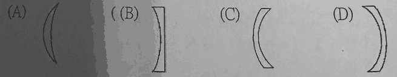
凸透鏡中央厚、周圍薄。(A) 中間厚，兩端尖。
將兩個三稜鏡如何組合時，其產生的光線路徑與凸透鏡最相似？
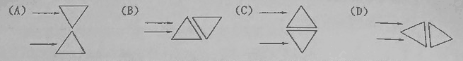
光經過三稜鏡會往底邊偏。兩塊底邊靠在中間，上下兩道光都往中間偏，就會聚了，像中央厚的凸透鏡。
物體所發出的光，經過單一凸透鏡後，不可能產生哪一種像？
凸透鏡的虛像只出現在焦點內，而且一定是放大的。
有一個物體放在凸透鏡前，並在鏡後的紙屏得到一個清晰的像，若將透鏡的外緣一小圈用不透明的物體遮住使其直徑變小，則紙屏上的像會有何變化？
像的大小由物距和焦距決定。遮住外圈只是通過的光變少，只變暗，像還是完整的。
一焦距 10 cm 的凸透鏡，欲產生實像時，物體與透鏡之距離不可能為多少？
實像需要物距大於焦距。8 cm 在焦點內，只會成虛像。
小如拿著一個透鏡，置於原子筆上方 15 公分的地方，觀測結果如右圖，則該透鏡焦距可能為何？
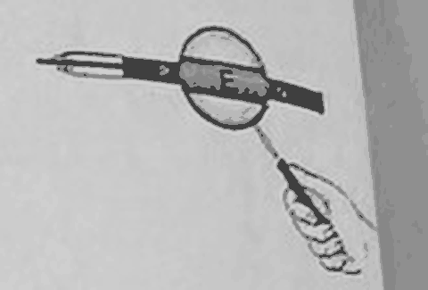
圖中看到的筆桿放大、方向沒有顛倒，是正立放大虛像，物體要在焦點內：15 公分＜焦距。四個選項只有 20 公分符合。
燭火放在上述哪幾個位置時，無法在屏幕上成像？
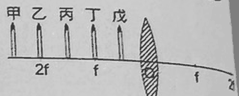
丁在焦點上不成像；戊在焦點內成虛像，紙屏接不到。甲、乙、丙都在焦點外，能成實像。
若將燭火放在甲處，鏡後的紙屏該挪到何處，才能呈現清晰的像？
甲在 2f 外，像落在 f～2f 之間。
若將燭火由丙處往外移動，使其遠離透鏡，則成像將會有何變化？
實像的規則：物體離透鏡愈遠，像愈小，一直是倒立的。
若將物體置於戊處，有關其成像的性質，下列敘述何者正確？
戊在焦點內，就是放大鏡的情況：正立放大虛像。
承上題，若將燭火往鏡心方向移動，則像將會有何變化？
放大鏡拿得愈靠近物體，放大的效果愈小；貼到物體上時大小幾乎一樣。所以虛像愈來愈小。
將三稜鏡排放如下時，何者產生的光線路徑與凹透鏡較類似？
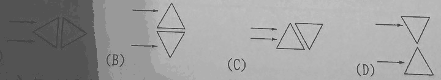
光往底邊偏。(D) 兩塊的尖端在中間、底邊朝外，上下兩道光都往外偏，就發散了，像中央薄的凹透鏡。
有一凹透鏡的焦距為 10 公分，今將一物體置於此凹透鏡前 40 公分處，則所成的像為下列何者？
凹透鏡不管物體放哪裡，都是正立縮小虛像。
小明以不同的透鏡觀察如右圖所示的紙卡，所得結果如下圖，試問何者必為使用凹透鏡觀察的結果？
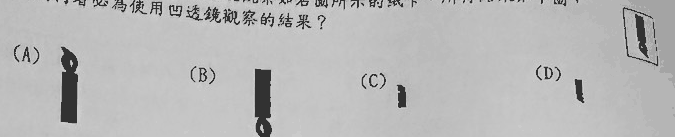
凹透鏡只會成正立縮小的像。紙卡上的圖案筆尖朝下，正立就是一樣筆尖朝下、而且變小，是 (D)。
關於判別實像、虛像的依據，何項是正確的？
能不能在紙屏上出現，就是判別的依據。(A) 透鏡也會成虛像。(B) 凹面鏡反射也能成實像。(D) 放大、縮小都有可能。
均均利用透鏡來觀察直尺上的刻度，並將直尺置於透鏡的焦距內觀察之，如下圖所示，試問圖（一）和圖（二）分別是以何種透鏡觀察的結果？
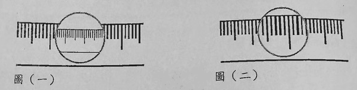
圖（一）鏡中的刻度變小又密，是凹透鏡。圖（二）刻度變大又疏，是焦距內的凸透鏡（放大鏡）。
4-4 光學儀器講義 p.21–25 · 33 題
① 重點填空 先自己想，再點空格看答案
- 複式顯微鏡：物鏡和目鏡皆是使用，物鏡下方可集中光線的反光鏡則為。p.21
- 複式顯微鏡經過物鏡和目鏡折射、放大，產生上下、左右的。p.21
- 照相機：鏡頭為組，可調節內部進光量，則可控制底片曝光的時間。p.21
- 照相機經過鏡頭折射後產生，成像於底片上。p.21
- 眼睛：水晶體可藉睫狀肌改變焦距，相當於，則可調節進光量。p.21
- 眼睛經水晶體折射後產生，成像於上。p.21
- 近視眼：焦距過，成像在視網膜，用透鏡矯正。p.21
- 遠視眼：焦距過，成像在視網膜，用透鏡矯正。p.22
- 老花眼：晶狀體調節衰退，看近物時成像在視網膜，用透鏡矯正。p.22
② 逐題練習
複式顯微鏡的物鏡及照相機的鏡頭，兩者所使用的鏡片分別為何？
兩者都要把光聚起來成像，都是凸透鏡。
複式顯微鏡所觀察到的成像是經由＿＿次放大所呈現的結果。
物鏡放大一次成實像，目鏡再放大一次成虛像。
有一被觀察的物體形狀如右圖所示，則由複式顯微鏡的目鏡所看到的像應為下列何者？（不計放大倍率）
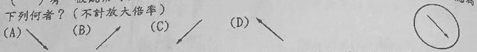
複式顯微鏡的像上下左右都相反，等於把物體轉 180 度。箭頭原本指右下，轉過來指左上，是 (D)。
承上題，若改用解剖顯微鏡觀察同一個標本，由目鏡所觀察到的成像應為下列何者？（不計放大倍率）
解剖顯微鏡看到的是正立的像，方向和物體相同，仍指右下。
在做生物實驗時，我們通常利用複式顯微鏡來觀察微小的生物，則下列有關複式顯微鏡的敘述何者錯誤？
眼睛從目鏡看到的最後成像是虛像。
有關複式顯微鏡的原理如下圖，下列敘述何者錯誤？
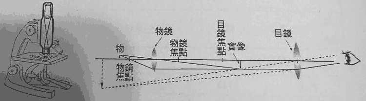
經過物鏡、目鏡兩次放大後，最後的像是虛像，(D) 寫實像是錯的。
以下關於傳統相機的敘述，何者正確？
(A) 景物在兩倍焦距外。(C) 鏡頭是凸透鏡組。(D) 那是數位相機。
阿強用照相機拍攝遠處的樹木時，發現成像在底片之前，導致拍攝的影像模糊，於是他做了下列各種調整，而哪一種方法無法改善圖像的清晰度？
問題是像的位置不在底片上。(A)(B) 讓像往後移，(C) 讓底片往前移，都能對準。(D) 只影響亮度，位置沒變。
使用單眼相機拍照時，若將光圈調大，則對相機有何影響？
光圈管進光量，快門管曝光時間。光圈大，進來的光多。
照相機的透鏡組具有何種作用？
鏡頭是凸透鏡組，功能是會聚光線成像。
被照相的物體應在透鏡組的前方何處？
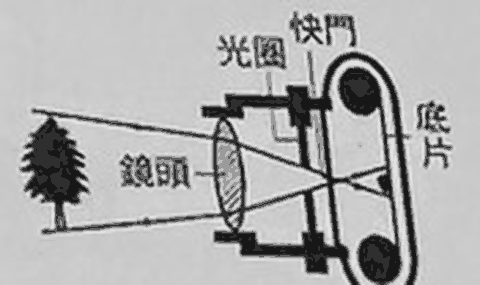
相機要成倒立縮小實像，物體要在 2f 外。
底片上所成的像為何？
物體在 2f 外，成倒立縮小實像。
底片成像在透鏡組的後方何處？
物在 2f 外，像就在 f～2f 之間。
若拍攝的物體遠離相機時，則相機的鏡頭應如何移動，底片上的像才會維持清晰？
物體愈遠，像愈靠近透鏡，所以鏡頭要往內縮，讓像落在底片上。
若小華近視 300 度，試問應該配戴下列哪一種鏡片，才能矯正視力？
眼鏡是讓光穿過的，要用透鏡。近視用凹透鏡。
華姍的爺爺閱讀報紙時，常必須將報紙拿得遠遠的，或是用放大鏡才能看得清楚，試問爺爺可能患有何種視覺缺陷？
年紀大、看近處吃力，就是老花眼。
下圖的情況需配戴適當焦距的何種鏡片來矯正視力？
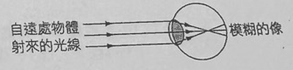
遠處的光聚在視網膜前，是近視，用凹透鏡把光稍微發散。
右圖為某種視覺缺陷的視網膜成像圖，下列相關敘述何者正確？
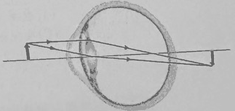
圖上的像落在視網膜後方，是遠視，焦距過長，用凸透鏡矯正。
下列何者是凸透鏡的應用？
老花眼鏡是凸透鏡。近視眼鏡是凹透鏡；後視鏡是凸面鏡，不是透鏡。
下列各種成像中，何者屬於虛像？
其他三個都投射在紙屏、視網膜或底片上，是實像。
以下關於眼睛與眼鏡的敘述，何者錯誤？
遠視是成像在視網膜後。
大雄視力良好，戴著無度數的太陽眼鏡，其鏡片應為下列何者？
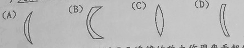
無度數的鏡片厚度處處相同，不會聚也不發散。(D) 的厚度均勻。
爺爺眼睛不好，想利用凸透鏡的放大作用來看報紙，請問報紙最好放在凸透鏡的哪一個範圍內？
當放大鏡用，物體要放在焦點內，才有正立放大虛像。
電影影片（底片）帶能夠透過放映機的鏡頭呈現大螢幕的效果，可知電影放映機所選用的透鏡及影片到透鏡之距離應為下列何者？
要在銀幕上看到（實像）又要放大，物體要放在 f～2f 之間。
小花所患的視覺缺陷應該為何？
看遠處模糊，是近視。
承上題，小花應該配戴下列哪一種鏡片來矯正視力？
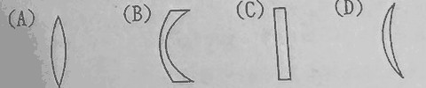
近視用凹透鏡：中間薄、周圍厚，是 (B)。
小花眼中水晶體的焦距較正常眼睛水晶體的焦距比較為何？
近視是焦距太短，光太早聚在一起。
如果小花不戴眼鏡時，遠處的物體其成像可能在小花眼睛視網膜的何處？
近視成像在視網膜前。
此視覺缺陷的名稱為何？
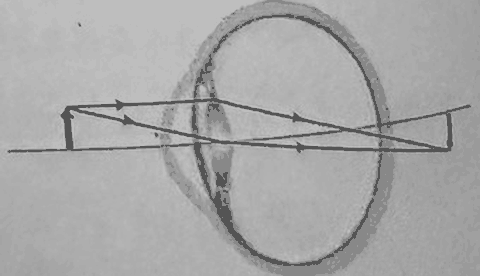
像落在視網膜後方，是遠視。
此視覺缺陷應配戴何種鏡片矯正之？
遠視用凸透鏡，讓光早一點聚。
下列哪一個光學儀器不屬於凸透鏡的運用？
近視眼鏡是凹透鏡。
(1) 遠視：當眼球長度小於正常或角膜扁平或水晶體較薄時，當光線進入眼內，其焦點會聚在視網膜之後，稱為「遠視」。遠視在看遠的物體時，不但看不清楚，看近時，焦點會在視網膜更後方，所以看近更不清楚。
(2) 老花眼：隨著年齡的增加，水晶體逐漸硬化，調節能力減弱，睫狀肌的收縮也減小了，當看近的物體時，無法屈光使影像投射在視網膜，而產生模糊視覺。
(3) 近視：近視是眼球增長所造成，有些具有遺傳性。當眼球由圓形變成橢圓形，看遠方物體時，水晶體無法藉著調適作用改變水晶體形狀，而使影像焦點會聚在視網膜前。
(4) 亂視：有人稱之為散光，通常是因為角膜變形、不規則所造成。
遠視、老花眼與近視中，上述哪些症狀在看遠處物體時，會看不清楚？
文章說遠視看遠的物體也看不清楚，近視也是。老花眼是看近有困難。
遠視、老花眼與近視中，上述哪些症狀在看近處物體時，會看不清楚？
文章說遠視看近更不清楚，老花眼也是看近模糊。近視看近沒有問題。
4-5 色光與顏色講義 p.26–29 · 20 題
① 重點填空 先自己想，再點空格看答案
- 光經由三稜鏡將白光分散後，會連續排列成紅、橙、黃、綠、藍、靛、紫，稱為。p.26
- 色散時，紅光在三稜鏡中的光速最、偏折最；紫光的光速最、偏折最（講義把紫光也印成「光速最快」，是印錯）。p.26
- 各種色光都可由、、三種色光組成。p.26
- 等量紅光和綠光混合形成光；等量藍光和紅光混合形成光；等量藍光和綠光混合形成光（講義印成「靛光」，正確是青光）。p.26
- 不透明物體：同色光，吸收不同色光。p.28
- 反射所有色光，吸收所有色光。p.28
- 透明物體：同色光，吸收不同色光。p.28
② 逐題練習
有時在水霧中會看見彩虹，此情形和雨後出現彩虹成因是一樣的嗎？
水霧和雨後的空氣裡都有很多小水滴。太陽光進出水滴時發生折射與反射，不同顏色偏折程度不同，就分成彩虹。
下列哪一個色光不屬於光的三原色？
光的三原色是紅、綠、藍。黃光由紅光和綠光混合而成。
下列哪一個現象，與光的色散有關？
色散是白光分成各種色光，彩虹就是。衣服的顏色是反射與吸收；天空藍是光的散射。
下列哪些光線的組合無法合成白光？
黃光＝紅＋綠，再加藍就齊全了，(D) 可以。紫和紅都偏紅藍，缺綠，無法合成白光。
右圖為太陽光通過三稜鏡後的情形，下列相關敘述何者錯誤？
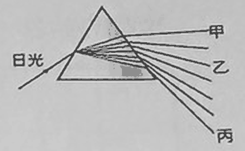
紅光偏折最小、紫光偏折最大。甲偏得少是紅光，丙偏得多是紫光，(C) 寫反了。
電腦螢幕上所呈現的各種顏色，是調整螢幕上三原色發光體的何種比例，所呈現出來的彩色畫面？
三原色的顏色（波長）固定，靠各自亮暗的比例調出不同顏色。
太陽光在水滴中產生哪些物理現象？
文中「改變了行進方向」是折射，光在水滴內壁還會反射。
彩虹的敘述，下列何者錯誤？
看彩虹要背對太陽。
下列有關三原色的敘述，下列何者正確？
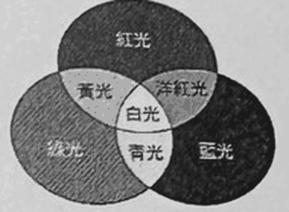
文章直接說了 (D)。(A) 可見光是連續的光譜。(B) 文章說狗只有兩種椎狀細胞。(C) 混色可以看到非常多顏色。
當有一個染料的顏色僅可以吸收紅光時，此染料顏色必為染料三原色之一。由光的三原色圖中，我們可以推知當我們用白光照此染料時，此染料所顯現的顏色為何？
白光是紅＋綠＋藍，紅光被吸收，剩下綠＋藍＝青色。
如果想要增加室內的明亮度，最好用哪一種顏色的塗料，可以獲得最好的效果？
白色反射所有色光，最亮。
生物老師告訴同學植物的光合作用中，葉綠素將光能、二氧化碳和水轉變成葡萄糖來維持植物所需要的養分。根據光學常識判斷，綠色植物在哪一種顏色的燈光照射下生長的情況最差？
葉子看起來綠，是因為綠光被反射掉了，吸收最少，能用的能量最少。
物體所呈現的顏色與下列哪項因素無關？
不透明物體的顏色取決於照的光，以及表面吸收和反射什麼色光。
喬治用紅光照射白、紅、綠、藍、黑等 5 個顏色的色紙，其中呈現紅色的色紙有幾張？
只有紅光時，能反射紅光的才是紅色：白紙和紅紙，共 2 張。綠、藍、黑紙都會變黑。
小華穿了一件單色的 T 恤參加舞會，只見他的衣服隨著五彩燈光的變化而改變為各種顏色，試問這件 T 恤的顏色應為什麼色？
白色反射所有色光，照什麼光就呈現什麼顏色。
戴深綠色太陽眼鏡去看紅花綠葉時，所呈現出的顏色最接近下列何者？
綠色鏡片只讓綠光通過。綠葉反射的綠光能到眼睛；紅花只反射紅光，被擋掉，看起來是黑的。
一張正方形的彩色色紙上塗有 4 種顏色，分別為占面積 20% 的白色，20% 的紅色，35% 的綠色，25% 的藍色。以紅光照射後，色紙上呈現的紅色與黑色面積比為何？
白和紅呈紅色：20＋20＝40%。綠和藍呈黑色：35＋25＝60%。比值 4：6。
如右圖所示，小美有一個洋娃娃，有著綠色的頭，黃色的身體，紅色的手及藍色的腳。若小美在房間裡對洋娃娃照射黃色的光線（已知黃光為紅光與綠光的組合），則有關小美所看見洋娃娃各部位的顏色，下列敘述何者正確？
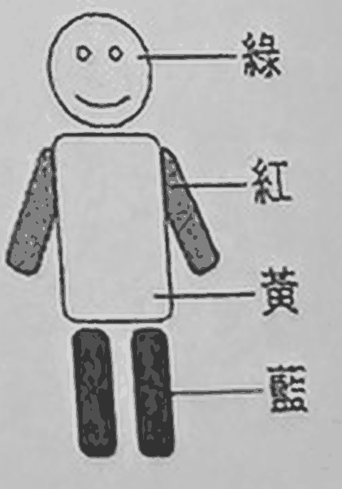
黃光＝紅光＋綠光。頭反射綠光（綠）；身體反射紅、綠（黃）；手反射紅光（紅）；腳只反射藍光，但照的光沒有藍，所以變黑。
光的三原色是紅、綠、藍，且將等量的紅光與綠光混合後，可產生黃光。今若透過紅色的玻璃紙看印在白紙上的圖（一）與圖（二），試問會看到何種畫面？
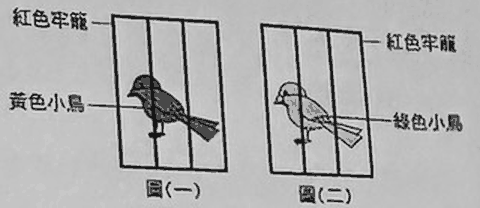
透過紅色玻璃紙，只有紅光到得了眼睛。白紙、紅牢籠、黃小鳥都有紅光，看起來一樣紅，圖（一）什麼都分不出來。
圖（二）的綠小鳥沒有紅光，看起來是黑的，牢籠則和紙融在一起，只看到一隻沒被關的鳥。
當光線照射藍色玻璃紙時，會有何現象？
透明物體：透過同色光，吸收不同色光。
圖解重點講義彩頁 · 用自己的話整理
圖解① 光的傳播、反射與折射
- 發光體自己會發光；非發光體要把光反射進眼睛才看得見。
- 光的直進性：光在均勻介質中走直線，所以有影子、有針孔成像。針孔成像上下顛倒、左右相反。
- 反射定律：入射線、反射線在法線兩側，同一平面，入射角＝反射角。
- 光的可逆性：讓光沿著反射光或折射光的路徑射回去，它會沿原來的路徑出去。
- 平面鏡：正立虛像，大小相等、左右相反，物距＝像距。凸面鏡：正立縮小虛像。凹面鏡：近距離時成正立放大虛像。
- 折射：光斜向進入不同透明介質時方向偏折。光速快→慢：折射線偏向法線；光速慢→快：折射線偏離法線。
圖解② 透鏡成像、色散與顏色
- 凸透鏡會聚光線，凹透鏡發散光線。焦點是平行光線通過透鏡後會聚（或看起來發散出來）的點，焦距是焦點到透鏡中心的距離。
- 凸透鏡成像：2 倍焦距外→倒立縮小實像；1～2 倍焦距間→倒立放大實像；焦點到透鏡間→正立放大虛像。
- 凹透鏡成像：不論物體在哪裡，都是正立縮小虛像。
- 色散：白光經折射後分散成各種色光。光的三原色是紅、綠、藍。
- 透明物體的顏色由可穿透的色光決定；不透明物體的顏色由表面吸收與反射的色光決定。